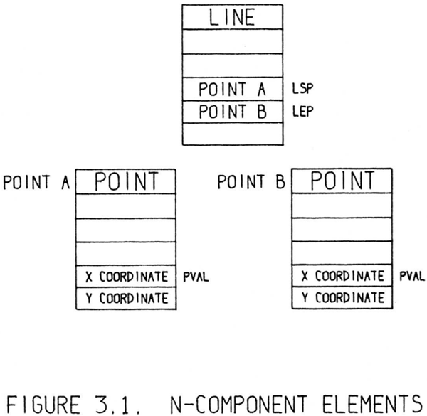
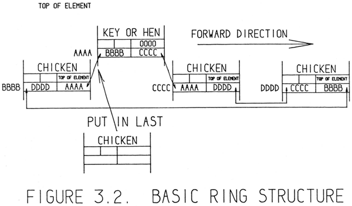
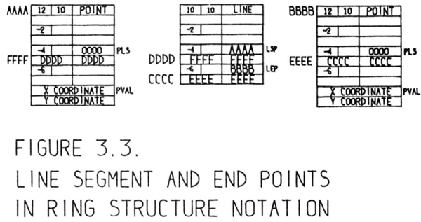
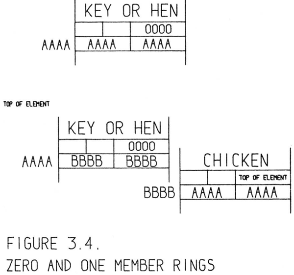
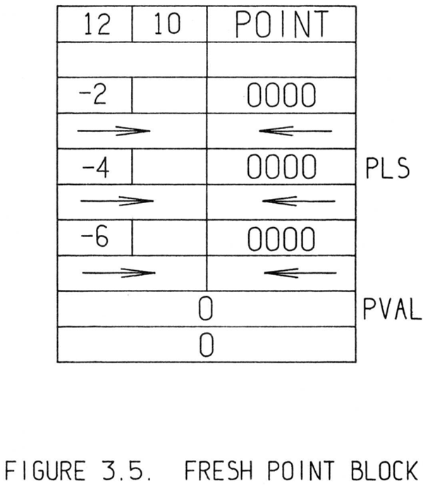
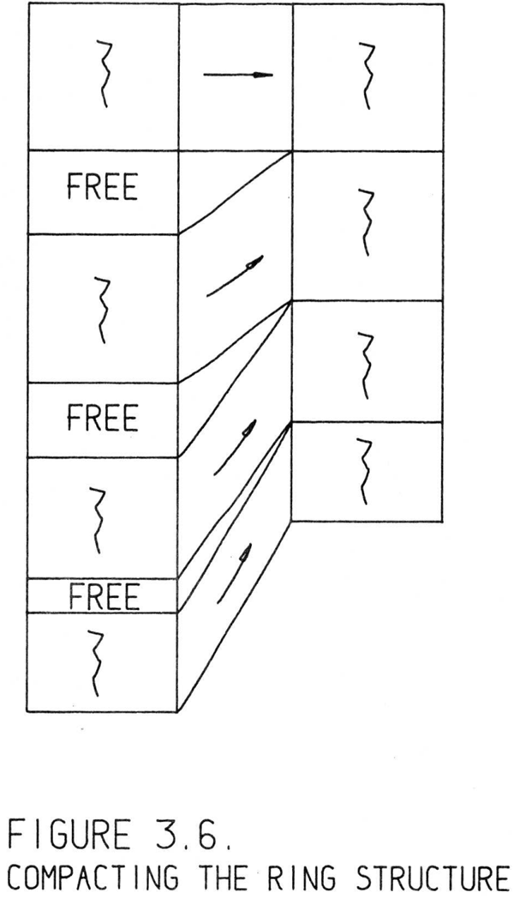
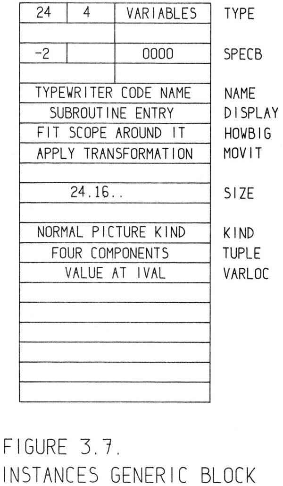
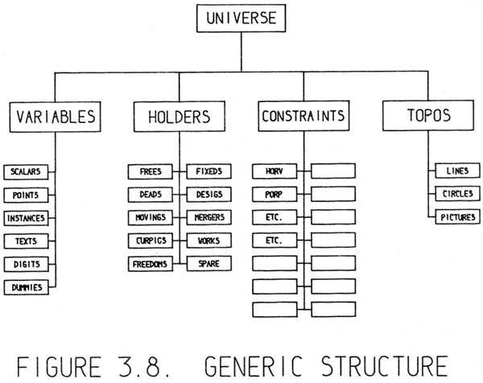

The Sketchpad system stores information about drawings in two separate forms. One is a table of display spot coordinates designed to make display
as rapid as possible; the other is a file designed to contain the topology of
the drawing. The topological file is set up in a specially designed ring structure which will form the major subject of this chapter. The ring structure was
designed to permit rearrangement of the data storage structure for editing pictures with a minimum of file searching, and to permit rapid constraint satisfaction and display file generation. The ring structure was not intended to
pack the required information into the smallest possible storage space. We felt
that we could write faster running programs in less time by including some redundancy in the ring structure. This was considered more important than the
ability to store huge drawings. Moreover, the large storage capacity of the TX2 did not force storage conservation. The particular form of the ring structure
chosen has led to some of the most interesting features of the system simply
because the changes required to keep the ring structure consistent led to useful
facilities such as recursive merging discussed in Chapter VI.
Sketchpadシステムは、図面に関する情報を2つの異なる形式で保持しています。一つは、表示を可能な限り高速化するために設計された表示点の座標テーブルであり、もう一つは図面のトポロジー（位相構造）を格納するためのファイルです。このトポロジー・ファイルは、本章の主要なテーマとなる、特別に設計された「リング構造」を用いて構成されています。このリング構造は、図面の編集に伴うデータ格納構造の再構成を最小限のファイル検索で行えるようにし、かつ拘束条件の充足や表示用ファイルの生成を高速化できるように設計されました。リング構造の設計にあたっては、必要な情報を最小限の記憶領域に詰め込むことは意図されていませんでした。むしろ、リング構造にあえて冗長性を持たせることで、より高速に動作するプログラムを短期間で作成できると考えたのです。巨大な図面を格納できることよりも、この点の方が重要であると判断されました。さらに、TX-2の記憶容量が大きかったため、記憶領域を節約する必要性もありませんでした。採用された特定のリング構造は、結果としてこのシステムの最も興味深い機能のいくつかを可能にしました。なぜなら、リング構造の整合性を維持するために必要な変更作業が、第6章で論じる「再帰的マージ（recursive merging）」のような有用な機能の実現につながったからです。
In the drawings made by the Sketchpad system there are large populations
of relatively few types of entities with very little variation in format between
entities of each type. For example, an entirek drawing may be composed of line segments and end points, each line segment connecting exactly two end
points, and each point having exactly two coordinates. Because of this uniformity within each given type of entity, it is possible to set up a standard
storage format for each type of entity with standardized locations for information about the various properties which entities of that particular type usually
have. Each entity, therefore, is represented in the computer as an n-component
element, that is, by a block of n consecutive registers in storage each of which
contains a specific kind of information about that element. For example, the
coordinates of a point are always stored in the i-th and j-th
registers of its ncomponent element or block. Similarly, the n
th and mth
registers of a line block
always contain the addresses of the start and end point blocks for that line as Figure 3.1 shows. Particular numerical locations for various pieces of information are shown in Appendix C.
Sketchpadシステムで作成される図面には、比較的少数の種類のエンティティが多数含まれており、各種類のエンティティ間での形式上の差異はごくわずかです。例えば、図面全体が線分と端点だけで構成される場合、各線分は正確に2つの端点を結び、各点は正確に2つの座標値を持つことになります。このように各種類のエンティティ内で一貫性があるため、その種類のエンティティが通常持つ様々な属性に関する情報を格納する位置を標準化した、標準的な格納形式を設定することが可能です。したがって、各エンティティはコンピュータ内で「n個の構成要素からなる要素」、すなわち、それぞれがその要素に関する特定の種類の情報を保持する、メモリ上のn個の連続したレジスタのブロックとして表現されます。例えば、点の座標は、その点を表すn個の構成要素からなる要素（ブロック）内の、常にi番目およびj番目のレジスタに格納されます。同様に、図3.1に示すように、線分を表すブロックのn番目およびm番目のレジスタには、常にその線分の始点および終点のブロックのアドレスが格納されます。様々な情報の具体的な格納位置については、付録Cに示されています。

In using n-component elements it has been found useful to give symbolic
names to the various registers of each element so that the actual numerical locations of various kinds of information need not be remembered. Thus, for example, the coordinates of a point are stored in the PVALth
and PVAL + 1
st
(for
Point VALue registers) of its n-component element. Since all programming for
Sketchpad is done in a symbolic programming language in terms of mnemonics, it is easy to rearrange the internal format of any kind of n-component element by changing the numerical values assigned to the mnemonic symbols
used within that kind of element. In the figures in this thesis, symbolic loca tions ofk pieces of data within n-component elements are shown to the right of
the data. Actual register addresses are shown to the left of the data. The position of particular pieces of data may change from figure to figure as it becomes
necessary to more fully illustrate the structure, but the mnemonic address will
indicate which data are being shown.
n成分要素を使用する際、各種情報の実際の数値的な格納場所を記憶しなくても済むよう、各要素の様々なレジスタに記号的な名称を割り当てることが有用であると分かった。例えば、ある点の座標は、そのn成分要素内のPVAL番目およびPVAL+1番目のレジスタ（PVALはPoint VALue［点値］レジスタを意味する）に格納される。Sketchpadのプログラミングはすべて、ニーモニックを用いた記号的プログラミング言語で行われるため、特定の種類のn成分要素内で使用されるニーモニック記号に割り当てられた数値を変更するだけで、その要素の内部形式を容易に再構成できる。本論文の図では、n成分要素内のk個のデータの記号的な格納位置がデータの右側に示され、実際のレジスタアドレスはデータの左側に示されている。構造をより詳細に説明する必要が生じるにつれて、特定のデータの位置が図ごとに変わる場合があるが、ニーモニックアドレスを見れば、どのデータが示されているかが分かるようになっている。
Although the use of mnemonics gives complete flexibility to the format of
n-component elements, certain conventions were followed in implementing
Sketchpad and in the figures of this thesis.
ニーモニック（記憶補助記号）の使用により、n成分要素の形式を完全に自由に設定することが可能ですが、Sketchpadの実装および本論文の図においては、特定の慣習に従っています。
In the figures, higher numbered registers run down the page, making the
location of an element the address of its top register. Such element locations
are indicated by symbolic names to the left of the n-component element or
contained within components of other elements which make reference to them.
図において、レジスタ番号はページの下方向に向かって大きくなっており、ある要素の配置位置は、その要素の最上位レジスタのアドレスとして表されます。こうした要素の位置は、n個のコンポーネントから成る要素の左側に記されたシンボリック名によって示されるか、あるいは、それらを参照する他の要素のコンポーネント内に記述されることによって示されます。
Most of the components of the n-component elements in the Sketchpad
system are pointers containing addresses of other elements. Such pointers indicate topological information such as the end points of a line segment. If an
n-component element is to be relocated in storage, that is, if the information it
contained is to be stored in some other registers to compact the storage structure prior to saving it on magnetic tape, the contents of any topological component referring to the element which is to be relocated must be changed to refer
to the new location.k However, relocation of an element in storage should not
change the appearance of the picture represented, and so numerical information such as the coordinates of points or the size of subpictures must not be
changed. Segregation of numerical information at the end of the n-component
element facilitates the relocation of elements.
Sketchpadシステムにおける「n成分要素」の構成要素の大部分は、他の要素のアドレスを保持するポインタである。こうしたポインタは、線分の端点といった位相的な情報を指し示している。もしn成分要素をメモリ内で再配置する場合――例えば、磁気テープへの保存に先立ち、記憶領域の構造を圧縮するためにその要素の情報を別のレジスタへ移す場合など――には、その要素を参照しているあらゆる位相的構成要素の内容を、新しい配置場所を指すように書き換えなければならない。しかし、メモリ内での要素の再配置によって、表現されている図形の見た目が変わってはならないため、点の座標やサブピクチャのサイズといった数値情報は変更してはならない。数値情報をn成分要素の末尾にまとめて配置しておくことは、要素の再配置を容易にする。
Gross transfers of the entire storage structure can be accomplished by treating all topological pointers as relative to some basic address. In Sketchpad, for
example, a topological pointer to an n-component element contains not the absolute computer address of that element, but the location of the n-component
element relative to the first address of the storage structure area, LIST. At various times it has been necessary to change the location of the storage area, giving LIST a different value. The use of relative pointers proves useful for intermachine communication also, making it possible to store a given data structure anywhere in memory. In the illustrations, however, the relative pointing
is suppressed, as if LIST = 0.
すべてのトポロジカル・ポインタをある基準アドレスからの相対位置として扱うことで、記憶構造全体を一括して移動させることが可能になります。例えばSketchpadでは、n個の構成要素からなる要素へのトポロジカル・ポインタは、その要素の絶対的なコンピュータ・アドレスではなく、記憶構造領域の先頭アドレス（LIST）を基準とした当該要素の相対位置を保持しています。記憶領域の場所を変更し、LISTに別の値を割り当てる必要が生じる場合が多々あります。相対ポインタの使用はマシン間通信においても有用であり、特定のデータ構造をメモリ上の任意の場所に格納することを可能にします。ただし、図示においては、LIST = 0であるかのように、相対的なポインタ指定は省略されています。
Suppose that index register α contains the relative location of the n-component
element for a line segment and that it is desired to know the coordinates of that
line’s start point (LSP). The address of the start point block may be found in
the LSP-th
entry of the line block as shown in Figure 3.1. We can pick up this
address using reverse indexing by the instruction:
インデックスレジスタαに、ある線分のn番目の構成要素の相対位置が格納されており、その線分の始点（LSP）の座標を知りたいと仮定します。始点ブロックのアドレスは、図3.1に示すように、線分ブロックのLSP番目のエントリから求めることができます。このアドレスは、逆インデックス指定を用いた以下の命令によって取得できます。
\[
LDA_{\alpha}LSP+LIST
\]
load the accumulator from the LSPth
entry of the block pointed to byk index
register α. LIST enters in because pointers are relative. Now if we transfer the
contents of the accumulator to index register β and form the instruction:
インデックスレジスタαが指すブロックのLSP番目のエントリから、アキュムレータに値を読み込みます（ポインタは相対的なものであるため、LISTが関与してきます）。ここで、アキュムレータの内容をインデックスレジスタβに転送し、次のような命令を構成するとします。
\[
LDA_{\beta}PVAL+LIST
\]
the X coordinate of the start point of the line will be placed in the accumulator
線の始点のX座標がアキュムレータに格納されます。
Note that in these instructions we used the index register to indicate which
n-component element is being considered and the address portion of the instructions to indicate the specific component selected. This is called “reverse
indexing” to distinguish it from “normal” indexing in which the index register
indicates the i
th of the table referred to in the address portion of the instruction.
The only normal thing about “normal” indexing, however, is the widespread
inclusion in computers of an instruction which increments an index register
and transfers control to a specified location if the index register has not yet reached some specified value, usually 0. The 709’s TIX instruction is typical.
ここで説明した命令では、インデックスレジスタを用いて「n個の要素からなる要素（n-component element）」のどれを対象とするかを示し、命令のアドレス部を用いてその中で具体的にどの成分（コンポーネント）を選択するかを示している点に注目してください。これは、命令のアドレス部で参照される表の「i番目」の要素をインデックスレジスタで指定する「通常の」インデックス指定と区別するために、「逆インデックス指定（reverse indexing）」と呼ばれます。もっとも、「通常の」インデックス指定において「通常」と言える唯一の点は、インデックスレジスタの値を増分（インクリメント）し、その値が特定の数値（通常は0）に達していなければ指定された番地へ制御を移すという命令が、多くのコンピュータに広く実装されていることくらいです。709のTIX命令は、その典型的な例です。
A real value of the TX-2 for implementing the Sketchpad system turned out
to be its ability to reset an index register from a register indicated by the contents of another index register (or even the prior contents of the index register
to be reset!). TX-2’s accumulator is not used in this index register processing.
A special symbolism was built into the compiler to make it easy to use double
index instructions; the instruction:
Sketchpadシステムを実装する上でTX-2が真価を発揮したのは、
別のインデックスレジスタの内容（あるいはリセット対象のインデックスレジスタの以前の内容）によって指定されたレジスタから、インデックスレジスタをリセットできる機能だった。
このインデックスレジスタ処理では、TX-2のアキュムレータは使用されない。
コンパイラには、ダブルインデックス命令を容易に使用できるように、特別な記号体系が組み込まれている。
その命令は以下のとおりである。
\[
RSX_{\beta|\alpha}LSP+LIST
\]
puts into β the address of the start point of the line pointed to byk index register α. The Sketchpad program consists in large part of such instructions.
インデックスレジスタαが指し示す線の始点アドレスを、βに格納します。Sketchpadのプログラムは、大部分がこうした命令で構成されています。
The basic n-component element structure described above has been somewhat
expanded in the implementation of Sketchpad so that all references made to a
particular n-component element or block are collected together by a string of
pointers which originates within that block. For example, all the line segments
which terminate on a particular point may be found by following a string of
pointers which starts within the point block. This string of pointers closes on
itself; the last pointer points back to the first. Moreover, the string points both
ways to make it easy to find both the next and the previous member of the
string in case some change must be made to them.
上述の基本的な「n成分要素」の構造は、Sketchpadの実装においていくぶん拡張されています。具体的には、特定のn成分要素やブロックに対するすべての参照が、そのブロックを起点とするポインタの連鎖によって一括して管理されるようになっています。例えば、ある特定の点（ポイント）で終わるすべての線分は、その点に対応するブロック内から始まるポインタの連鎖をたどることで見つけ出すことができます。このポインタの連鎖は閉じたループを形成しており、最後のポインタは最初のポインタを指し示しています。さらに、この連鎖は双方向のリンクになっているため、構成要素に対して何らかの変更を加える必要がある場合でも、連鎖上の「次」および「前」の要素を容易に見つけることが可能です。
The ring structure, then, assigns two registers to each component in the ncomponent element. One is used for the direct reference shown in Figure 3.1;
the other register is used to string similar references together. The basic ring
consists of two kinds of register pairs, the “hen” and “chicken.” The hen pair
is contained within a block which will be referred to, for example, in a point
block, while the chicken pair is contained in a block making reference to another, for example, a line block making reference to the point. The chickens
which belong to a particular hen constitute all the references made to the block
containing the hen. Figure 3.2 shows a typical ring; the inserting operation
and ordering shown will be explained below. Appendix C shows how the hen
and chicken blocks are arranged in different kinds of elements.k Figure 3.3 shows the complete structure for a line segment and two end points with the
appropriate rings shown
このリング構造では、ncomponent要素内の各コンポーネントに対して2つのレジスタが割り当てられます。一方は図3.1に示す直接参照に使用され、もう一方は類似した参照同士を連結するために使用されます。この基本的なリングは、「hen（親）」と「chicken（子）」という2種類のレジスタペアで構成されています。「hen」ペアは、例えばポイントブロック（点要素のブロック）のように参照される側のブロックに含まれ、一方の「chicken」ペアは、例えばポイントを参照するラインブロック（線要素のブロック）のように、別のブロックを参照する側のブロックに含まれます。特定の「hen」に属する「chicken」群は、その「hen」を含むブロックに対して行われたすべての参照を構成します。図3.2は典型的なリングを示しており、そこに示されている挿入操作や順序付けについては後述します。付録Cでは、様々な種類の要素において「hen」ブロックと「chicken」ブロックがどのように配置されるかを示しています。図3.3は、線分と2つの端点について、適切なリングを含めた完全な構造を示しています。


The mnemonic for a component is taken to be the upper (lower numbered)
of the register pair. The ring collecting ties, of course, are relative to LIST but
this has been suppressed in the illustrations. The part of the upper register not
occupied by the chicken pointer contains a number which indicates how far
this particular element is from the top of the n-component element. This is the
small negative number showing in Figure 3.3. It is used to find the top of a
block when a component of it has been found as a member of a ring.
コンポーネントのニーモニック（識別名）としては、レジスタペアのうち上位（番号の小さい方）のレジスタが用いられます。もちろん、リンク（接続関係）をまとめるリング構造は LIST に関連するものですが、図では省略されています。上位レジスタのうち、「チキン・ポインタ（chicken pointer）」が占めていない部分には、その要素が n-コンポーネント要素の先頭からどれだけ離れているかを示す数値が格納されています。これが図3.3に示されている小さな負の数です。この数値は、あるコンポーネントがリングの構成要素として見つかった際に、そのコンポーネントが属するブロックの先頭位置を特定するために使用されます。
In representing ring structures the chickens should be thought of as beside
the hens, and perhaps slightly below them, but not directly below them. The
reason for this is that in the ring registers, regardless of whether in a hen or
a chicken, the left half of one register points to another register whose right
half always points back. By placing all such registers in a row, this feature is
clearly displayed. Moreover, the meaning of placing a new chicken “to the left
of” an existing chicken or the hen is absolutely clear. The convention of going
“forward” around a ring by progressing to the right in such a representation
is clear, as is the fact that putting in new chickens to the left of the hen puts
them “last,” as shown in Figure 3.2. Until this representation was settled on,
no end of confusion prevailed because there was no adequate understanding
of “first,” “last,” “forward,” “left of,” or “before.”
リング構造を表現する際、各「チキン（chicken）」は「ヘン（hen）」の隣、あるいはヘンよりわずかに低い位置にあるものと考えるべきですが、ヘンの真下にあるわけではありません。その理由は、リング内のレジスタ（ヘンであれチキンであれ）において、あるレジスタの左半分が別のレジスタを指し示し、その指し示されたレジスタの右半分が常に元のレジスタを指し返すという仕組みになっているからです。こうしたレジスタをすべて一列に並べることで、この特徴が明確に示されます。さらに、既存のチキンやヘンの「左側」に新しいチキンを配置することの意味も極めて明白になります。このような表現において右へ進むことがリングを「前方」へ移動することに相当するという慣習は明らかですし、図3.2に示されているように、ヘンの左側に新しいチキンを挿入すると、それらが「最後（last）」に位置することになるという点も同様に明白です。この表現方法が定着するまでは、「最初（first）」「最後（last）」「前方（forward）」「～の左（left of）」「～の前（before）」といった概念について適切な理解がなされていなかったため、絶えず混乱が生じていました。
The basic ring structure operations are:
基本的な環構造の演算は以下の通りです。
These basic ring structure operations are implemented by short sections of
program defined as MACRO instructions in the compiler language. By suitable treatment of zero and one member rings, that is of hens with none or one
chicken, as shown in Figure 3.4, the basic operation programs operate without
making special cases. As stated in the macro language, the basic operations
became trivially easy to use. For example,
これらの基本的なリング構造操作は、コンパイラ言語においてマクロ命令として定義された短いプログラムによって実装されています。図3.4に示すように、要素数が0または1のリング（すなわち、鶏がいない、あるいは1羽しかいない「鶏小屋」）を適切に扱うことで、これらの基本操作プログラムは例外的な処理を必要とせずに動作します。マクロ言語として定義されたことで、これらの基本操作は極めて容易に使用できるようになりました。例えば、
\[
PUTL\equiv LSP×α→PLS×β
\]
puts the LSP (Line Start Point) entry of the line block pointed to by index register α into the ring whose hen is the PLS (Point LineS entry) of the point
indicated by index register β, thus making β be the start point of α. If “×”
is read as “of” and “→” is read as “into”, the macro statement almost makes
sense in English. The format and function of all the ring manipulation macro
instructions used in Sketchpad can be found in Appendix D.
インデックスレジスタ α が指す線分ブロックの LSP（Line Start Point）エントリを、インデックスレジスタ β が示す点の PLS（Point LineS entry）をヘン（hen）とするリングに組み込みます。これにより、β が α の始点となります。「×」を「of」、「→」を「into」と読むと、このマクロ文は英語としてほぼ意味が通じるものになります。Sketchpad で使用されるすべてのリング操作マクロ命令の形式と機能については、付録 D を参照してください。

Subroutines are used for setting up new n-component elements in free spaces
in the storage structure. These subroutines place thek distance-to-the-top numbers in alternate registers as required and clear out the components so that each
is an empty ring as shown in Figure 3.5. As parts of the drawing are deleted,
the registers which were used to represent them become free, indicated by
placing them in the FREES ring. Data for new n-component elements could
be put into these free registers if sufficiently long continuous blocks of free
storage were available, but Sketchpad is not at present equipped to do this.
Rather, new components are set up at the end of the storage area, lengthening
it, while free blocks are allowed to accumulate. Garbage collection periodically
compacts the storage structure by removal of the free blocks and relocation of
the information above them (that is, information in higher numbered registers
illustrated lower on the page) as shown in Figure 3.6. Storage of a drawing
on magnetic tape can be done much more compactly for having removed all
internal free registers.
サブルーチンは、記憶構造内の空き領域に新しいn要素（n-component）要素を構築するために使用されます。これらのサブルーチンは、必要に応じて「頂点までの距離（distance-to-the-top）」を示す数値を交互のレジスタに配置し、各要素が図3.5に示すような空のリング（empty ring）となるように構成要素をクリアします。図面の一部が削除されると、それらを表すために使用されていたレジスタは解放され、FREESリングに組み込まれることで空き状態であることが示されます。十分な長さの連続した空き記憶ブロックが利用可能であれば、これらの空きレジスタに新しいn要素要素のデータを格納することも可能ですが、現在のSketchpadにはその機能は実装されていません。その代わり、新しい要素は記憶領域の末尾に構築されて領域が拡張され、空きブロックはそのまま蓄積されていきます。ガベージコレクションは、図3.6に示すように、空きブロックを除去し、それより上位にある情報（つまり、ページの下方に図示されている、より大きな番号のレジスタ内の情報）を再配置することで、定期的に記憶構造を圧縮します。内部の空きレジスタがすべて除去されているため、磁気テープへの図面の保存をはるかにコンパクトに行うことができます。


Every system which is devised for programming on computers has little problem areas which give humans more trouble than other parts; the ring structure
organization and operations are no exception. As was indicated above, the
visualization of the ring as a row of elements aids greatly in understanding of
the basic operations. The use of relative addressing, while giving great power
for data communication, gave the programmer considerable difficulty because
the term LIST must often but not always be added to or subtracted from the
address portion of instructions. It took months before all the nuances of these
problems were learned.
コンピュータ・プログラミングのために考案されたあらゆるシステムには、他の部分に比べて人間を悩ませる厄介な箇所が少なからず存在しますが、リング構造の構成や操作も例外ではありません。前述の通り、リングを要素の列として視覚的に捉えることは、その基本操作を理解する上で大いに役立ちます。相対アドレス指定の採用は、データ通信において強力な機能をもたらした一方で、プログラマにかなりの困難を強いることにもなりました。なぜなら、命令のアドレス部分に対して「LIST」という値を加算あるいは減算しなければならない場合が多々あったからです（ただし、常にそうしなければならないわけではありませんでした）。こうした問題に伴うあらゆる機微を完全に理解できるようになるまでには、数ヶ月を要しました。
By far the greatest difficulty concerned processes which change the ring structure while other operations are taking place on it. For example, there
must be two versions of the basic macro which permits auxiliary operations
to be performed on all the members of a ring in turn. One version, LGORR
(Leonard’s GO Round the ring to the Right), performs the auxiliary operation
on one ring member while remembering the next ring member so that if the
auxiliary operation deletes the current ring member the next one has already
been found. Another version of the basic macro, LGORRI (LGORR Insertable),
remembers which ring member the auxiliary operation is being performed on
so that if the auxiliary operation puts a brand new member into the ring next
to the current one, the new one will not be overlooked. Neither macro will
function properly if both the current and the next ring members are deleted
simultaneously by the auxiliary function.
圧倒的に大きな困難を伴ったのは、リング上で何らかの操作が行われている最中に、そのリング構造自体が変化してしまうような処理に関するものでした。例えば、リングの全要素に対して順次、補助的な操作を行うための基本マクロには、2つのバージョンが必要となります。その一方である「LGORR」（Leonard’s GO Round the ring to the Right）は、あるリング要素に対して補助操作を行う際、あらかじめ「次の」要素を記憶しておきます。こうすることで、もし補助操作によって現在の要素が削除されたとしても、次の要素をすでに特定できている状態を保てるのです。もう一方のバージョンである「LGORRI」（LGORR Insertable）は、現在どの要素に対して補助操作を行っているかを記憶します。これにより、もし補助操作によって現在の要素の隣に新しい要素がリングへ挿入された場合でも、その新しい要素を見落とさずに済みます。ただし、補助機能によって現在の要素と次の要素の両方が同時に削除されてしまうような場合には、どちらのマクロも正しく機能しません。
Early in the research the multiple sequence nature of the TX-2 was utilized to provide immediate updating of the ring structure when push button
commands were given by the user. Trouble arose if the display generation program was working in the ring structure at the instant that it changed. It is now
clear that multiple sequencing and data channels must be used only to transmit information into the computer and not to process the ring structure, a job
properly left to the main computation stream. Main computation stream ring
manipulation has implications on future machine design since most of the ring
manipulations can be performed with index arithmetic alone without tying up
the main arithmetic element which meanwhile could be of use to someone else.
Perhaps several machines could share a single powerful arithmetic element if
they did the bulk of their processing with index arithmetic.
研究の初期段階において、TX-2の持つマルチシーケンス（多重シーケンス）機能は、ユーザーが押しボタンで指令を出した際にリング構造を即座に更新するために利用されていました。しかし、リング構造が変更されるまさにその瞬間に、表示生成プログラムがその構造を処理していると問題が生じました。現在では、マルチシーケンスやデータチャネルは、あくまでコンピュータへの情報転送にのみ使用すべきであり、リング構造の処理には使用すべきではないことが明らかになっています。リング構造の処理は、本来、主演算ストリーム（メインの計算処理の流れ）が担うべき仕事だからです。主演算ストリームによるリング操作は、将来の計算機設計に示唆を与えます。なぜなら、リング操作の大部分はインデックス演算（指標演算）のみで実行可能であり、主演算器を占有せずに済むからです。主演算器が占有されなければ、その間、他の処理に利用することが可能になります。もし計算機が処理の大半をインデックス演算で行うのであれば、複数の計算機で単一の強力な演算器を共有できるかもしれません。
The organization of the elements of the drawing into types has facilitated the generalization of the programs which comprise the Sketchpad system. The effort toward generality came relatively late in the research effort because I did
not at first appreciate the power that a general approach could bring. Considerable reprogramming was done, however, to include as much generality as
possible. Those subroutines which had to do with a single kind of drawing
part were collected together and specifically labeled, both in the coding sheets and block diagrams, but most importantly in the mind, as belonging to that
particular kind of entity. The remainder of the program was left completely
general.
図面の構成要素をいくつかのタイプに分類・整理したことで、Sketchpadシステムを構成するプログラムの汎用化が容易になりました。汎用性を追求する取り組みは、研究の比較的後期の段階になってから行われました。というのも、当初は汎用的なアプローチがもたらす威力を十分に認識していなかったからです。しかし、可能な限り汎用性を持たせるために、かなりの部分でプログラムの書き直しが行われました。特定の種類の図面要素に関わるサブルーチンは一箇所にまとめられ、コーディングシートやブロック図において、さらには何よりも設計者の頭の中で、その特定の種類のエンティティ（実体）に属するものとして明確に識別・分類されました。一方、プログラムのそれ以外の部分は、完全に汎用的なものとして残されました。
The general part of the program will perform a few basic operations on any
drawing part, calling for help from routines specific to particular types of parts
when that is necessary. For example the general program can show any part
on the display system by calling the appropriate display subroutine. Similarly,
the general program is able to relocate objects on the display, making use of
specific routines only to apply a transformation to the various kinds of objects.
Again, the general program will satisfy any numerical constraints applied to
the drawing by the user, calling on specific subroutines only to compute the
error introduced into the system by a particular constraint.
プログラムの汎用部分は、任意の図形要素に対して基本的な処理を実行しますが、必要に応じて特定の要素タイプに固有のルーチンを呼び出します。例えば、適切な表示用サブルーチンを呼び出すことで、あらゆる要素を表示システム上に表示することができます。同様に、表示上のオブジェクトを移動させる際にも、汎用プログラムは、各種オブジェクトへの変換処理を行う場合にのみ固有のルーチンを利用します。さらに、ユーザーが図形に課した数値的な制約を満たす処理においても、特定の制約によってシステムに生じる誤差を計算する場合にのみ、固有のサブルーチンを呼び出します。
The big power of the clear-cut separation of the general and the specific
is that it is easy to change the details of specific parts of the program to get
quite different results or to expand the system without any need to change the general parts. This was most dramaticallyk brought out when generality was
finally achieved in the constraint display and satisfaction routines and new
types of constraints were constructed literally at fifteen minute intervals.
「一般的」な部分と「個別的」な部分を明確に分離することの大きな利点は、一般的な部分を変更することなく、プログラムの特定の箇所の詳細を変更して全く異なる結果を得たり、システムを拡張したりすることが容易であるという点にあります。この利点が最も劇的に示されたのは、制約の表示および充足を行うルーチンにおいて「汎用性」が実現された際のことでした。その時は、文字通り15分間隔という短さで、新しい種類の制約を次々と構築することが可能になったのです。
In the data storage structure the separation of general and specific is accomplished by collecting all things of one type together as chickens which
belong to a “generic” hen. The generic hen contains all the information which
makes this type of thing different from all other types of things. Thus the data
storage structure itself contains all the specific information, leaving only general programs for the rest of the system. A typical generic block is shown in
Figure 3.7.
データ格納構造において、一般的要素と個別的要素の分離は、ある特定の種類のものをすべて「ジェネリックな（汎用的な）親」に属する「子（チキン）」としてまとめることによって実現されます。このジェネリックな親は、その種類のものを他のあらゆる種類のものと区別するすべての情報を保持しています。したがって、データ格納構造自体がすべての個別的な情報を保持することになり、システムの他の部分には一般的なプログラムだけが残されることになります。典型的なジェネリック・ブロックを図3.7に示します。

The generic blocks are further gathered together under super-generic or
generic-generic blocks according to four categories: Variables, Topologicals,
Constraints, and Holders, as shown in Figure 3.8. All picture parts which
have numerical information are ultimately gathered together under the VARIABLES block by way of their own generic blocks. Ideally the VARIABLES
block should in some way indicate that there was numerical information, but
the generality has not been carried as far as this yet. Space for information
about the number of components of a variable (which is unnecessary for the
topological entities) could be omitted from the generic blocks for lines and circles. At present all generic blocks still carry space for all the information in
any of them simply because of historical reasons. This accounts for the spaces
seen in the Figure 3.7.
図3.8に示すように、汎用ブロックはさらに、「変数（Variables）」、「トポロジー（Topologicals）」、「拘束（Constraints）」、「ホルダー（Holders）」という4つのカテゴリに基づき、スーパー汎用ブロックまたは汎用汎用ブロックの下にまとめられています。数値情報を持つすべての図形要素は、最終的にそれぞれの汎用ブロックを経由して「変数（VARIABLES）」ブロックの下に集約されます。理想的には、「変数（VARIABLES）」ブロックにおいて数値情報が存在したことが何らかの形で示されるべきですが、汎用化の取り組みはまだそこまでには至っていません。直線や円の汎用ブロックからは、変数の構成要素数に関する情報（トポロジー要素には不要な情報）のための領域を省略することも可能でしょう。しかし現時点では、単に歴史的な経緯から、すべての汎用ブロックがいずれかの要素に必要な全情報分の領域を保持したままになっています。図3.7に見られる空白領域は、このことに起因しています。

Forthe sake of completeness the four broad categories of things, the genericgeneric blocks, are brought together under the UNIVERSE block, which, as a special case, is always located at the exact start ofk the storage structure, relative address 1. The UNIVERSE block belongs to no higher block. I considered making it belong to itself so that continued upward searching through
the generic structure would appear to reach an unending string of UNIVERSE
blocks, but I could find no solid reason for so doing. Further work may develop one, of course.
完全を期すため、4つの大きなカテゴリ（汎用ブロック）は「UNIVERSE」ブロックの下にまとめられています。このUNIVERSEブロックは特殊なケースとして、常にストレージ構造の正確な先頭、すなわち相対アドレス1に配置されます。UNIVERSEブロックは、それより上位のブロックには属しません。汎用構造を上位に向かって探索し続けた際に、UNIVERSEブロックが延々と続くように見えるよう、このブロックを「それ自身に属する」ものにすることも検討しましたが、そうする確固たる理由は見当たりませんでした。もちろん、今後の作業で何らかの理由が見つかる可能性はあります。
Addition of new types of things to the Sketchpad system’s vocabulary of picture parts requires only the construction of a new generic block (about 20 registers) and the writing of appropriate subroutines forthat thing. The subroutines
might be easy to write, as they usually are for new constraints, or difficult to
write, as for adding ellipse capability, but at least a finite, well-defined task
faces one to add a new ability to the system. Before the generic structure was
clarified, it was almost impossible to add the instructions required to handle a
new type of element.
Sketchpadシステムの図形要素の語彙に新しい種類の要素を追加するには、新しい汎用ブロック（約20レジスタ分）を構築し、その要素に対応する適切なサブルーチンを記述するだけで済みます。それらのサブルーチンの記述は、新しい拘束条件の場合のように容易なこともあれば、楕円機能の追加のように困難なこともありますが、いずれにせよ、システムに新しい機能を追加する際に直面する課題は、有限かつ明確に定義されたものです。この汎用的な構造が明らかになる前は、新しい種類の要素を扱うために必要な命令を追加することは、事実上不可能でした。